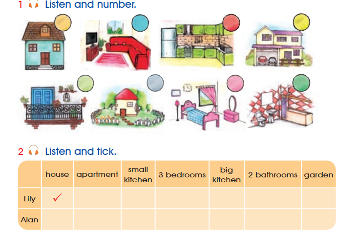
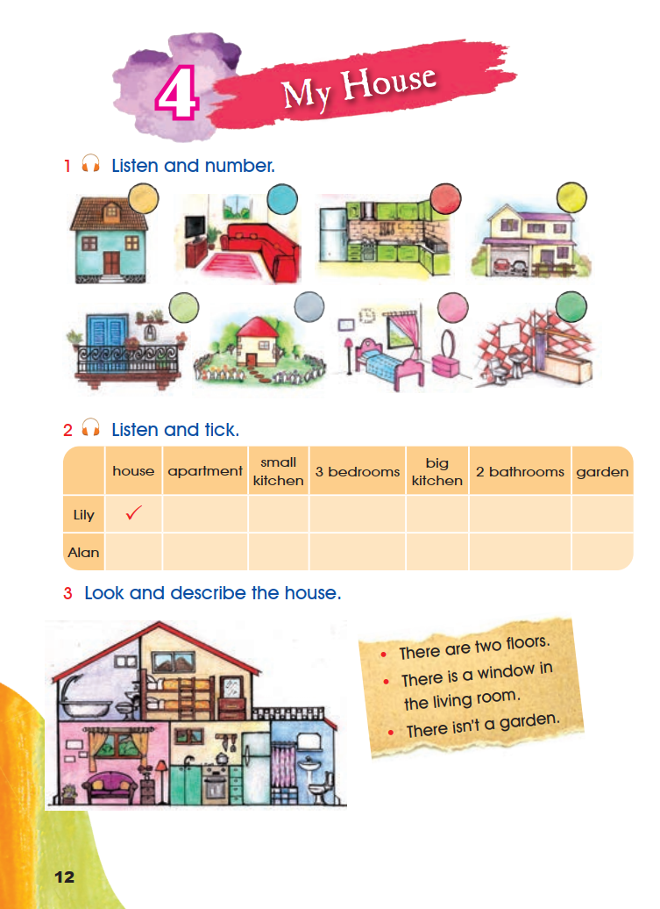
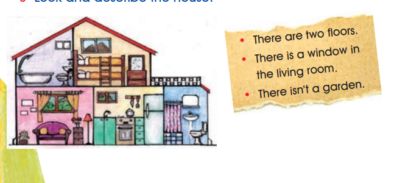
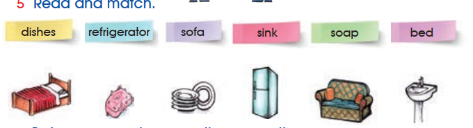
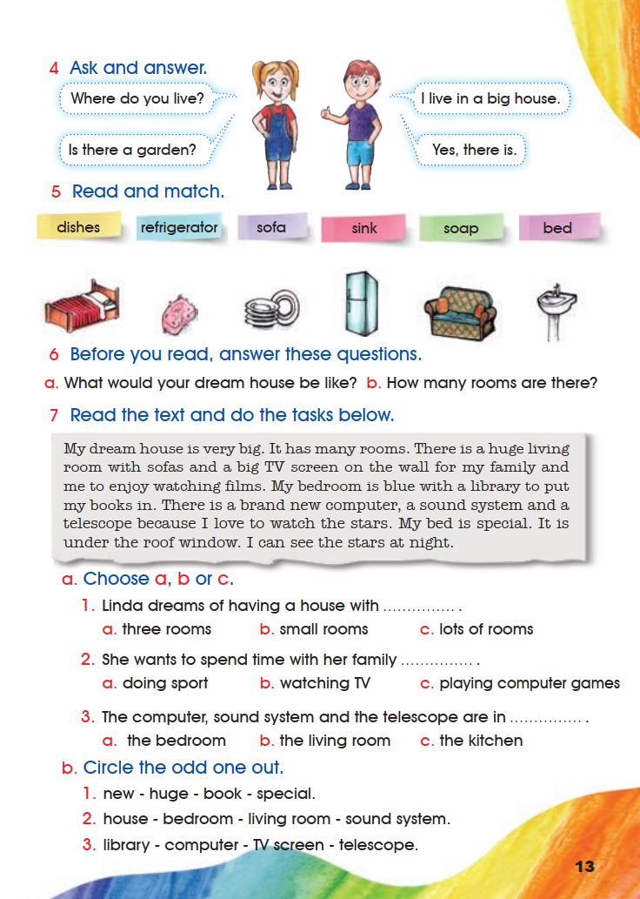
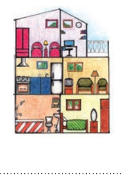
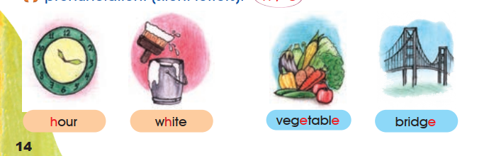
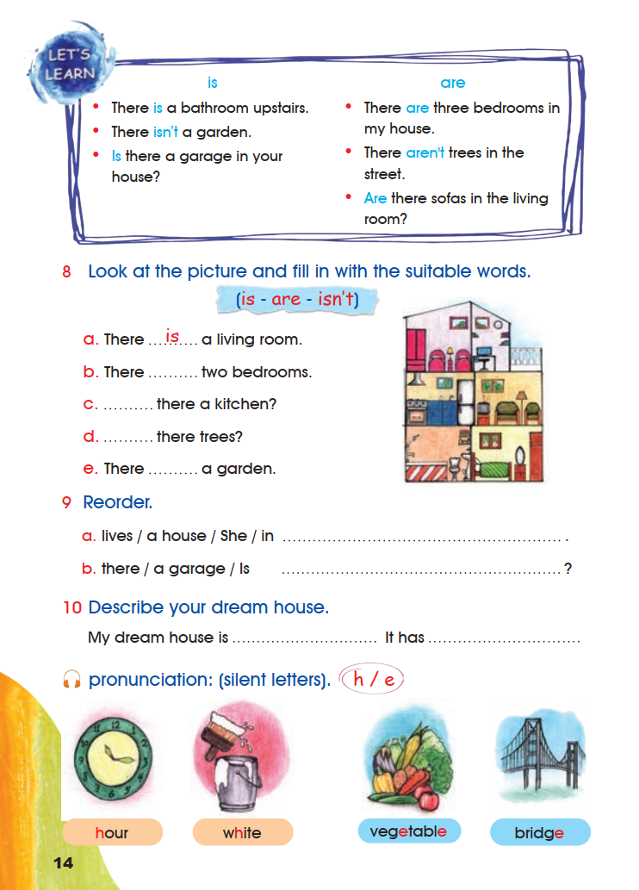

Pupil’s Book
My House · pages 12–14
Activities 1–10 and the printed “Let’s Learn” box appear in source order. No listening transcript or unverified listening key is added.
1. Listen and number.

2. Listen and tick.
Open the original source · Pupil’s Book · p. 12
Upload 7, preserved unchanged. SHA-256 and source mapping are recorded in the source manifest.

3. Look and describe the house.

- There are two floors.
- There is a window in the living room.
- There isn’t a garden.
The three model statements are printed beside the picture. Your additional description is open-ended.
4. Ask and answer.
Where do you live?
Is there a garden?
I live in a big house.
Yes, there is.
The two questions and two model answers are printed in speech bubbles. The exercise is spoken practice.
5. Read and match.
dishesrefrigeratorsofasinksoapbed

6. Before you read, answer these questions.
7. Read the text and do the tasks below.
My dream house is very big. It has many rooms. There is a huge living room with sofas and a big TV screen on the wall for my family and me to enjoy watching films. My bedroom is blue with a library to put my books in. There is a brand new computer, a sound system and a telescope because I love to watch the stars. My bed is special. It is under the roof window. I can see the stars at night.
a. Choose a, b or c.
Open the original source · Pupil’s Book · p. 13
Upload 8, preserved unchanged. SHA-256 and source mapping are recorded in the source manifest.

Let’s Learn
is
- There is a bathroom upstairs.
- There isn’t a garden.
- Is there a garage in your house?
are
- There are three bedrooms in my house.
- There aren’t trees in the street.
- Are there sofas in the living room?
The examples are kept in their printed columns. No extra rule about the separate pronunciation box is inferred.
8. Look at the picture and fill in with the suitable words.
is – are – isn’t

9. Reorder.
10. Describe your dream house.
Personal writing. The source prints open dotted lines and provides no fixed description or answer key.
Pronunciation: (silent letters). (h / e)

hourwhitevegetablebridge
Open the original source · Pupil’s Book · p. 14
Upload 9, preserved unchanged. SHA-256 and source mapping are recorded in the source manifest.

Practice answers are saved in this browser only.